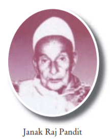

Biography:
Pandit Janak Raj Pandey was the first Khajanchee of Nepal. He was
the Khajanchee(Governor) from 1945 to 1948 during the ruling period
of King Tribhuwan. Nepal Rastra Bank wasn't established at that time.
So, the notes were issued as a MORU from Sadar Muluki Khana. For the
first time domination of Moru 5, Moru 10 & Moru 100 were issued
in Nepal. We can find the signature of Pandit Janak Raj Pandit
on the above currency.